Zianya Nenetzi Trujillo Beltran, José Eduardo Cruz Campos , Paola Mildred Martínez Hidalgo, Eric Toporek Coca
Fecha de publicación
19 de marzo de 2026
Empresa y metodología de Minería de Datos
Cada integrante del equipo deberá elegir una empresa distinta en la que le gustaría trabajar e investigar qué metodología utiliza para desarrollar proyectos de Minería de Datos.
Eric: Capital One, un banco estadounidense, diseña la metodología en función de que esté fuertemente cargada en automatización tanto en procesos de minería de datos como en procesos de machine learning, así como en la gestión de datos, en función de tener modelos que analizan tendencias de mercado y detección de fraudes o riesgos. Cada equipo es propietario de los recursos que utiliza, por lo que se encarga de su gestión y mantenimiento. Los datos siguen el siguiente ciclo de vida:
El dataset RNPDNO-22-08-2023 contiene información oficial sobre personas desaparecidas y no localizadas en México, publicada como dato abierto. Cada fila representa el reporte de una persona desaparecida.
Número de filas: 116945
Código
import numpy as npimport pandas as pdimport matplotlib.pyplot as pltdataset = pd.read_csv("RNPDNO-22-08-2023.csv", encoding="latin-1")df = pd.DataFrame(dataset)num_files = df.shape[0] #obtenemos el numero de filas del csv print(f"Numero de filas: {num_files}")
Numero de filas: 116945
Número de columnas: 11
Código
import numpy as npimport pandas as pdimport matplotlib.pyplot as pltdataset = pd.read_csv("RNPDNO-22-08-2023.csv", encoding="latin-1")df = pd.DataFrame(dataset)num_columns = df.shape[1] #obtenemos el numero de columnas del csvprint(f"Numero de columnas: {num_columns}")
Numero de columnas: 11
Periodo de fechas cubierto: Se cubrió desde el periodo del 01-05-1968 al 20-08-2023
Código
import numpy as npimport pandas as pdimport matplotlib.pyplot as pltdataset = pd.read_csv("RNPDNO-22-08-2023.csv", encoding="latin-1")df = pd.DataFrame(dataset)# eliminamos espacios en blanco de los nombres de las columnasdf.columns = df.columns.str.strip() #metemos a una lista las fechas de desaparicion para despues obtener la fecha minima y maxima.df["Fecha de desaparición"] = pd.to_datetime( df["Fecha de desaparición"], format="%d/%m/%Y", errors="coerce" )fecha_min = df["Fecha de desaparición"].min() fecha_max = df["Fecha de desaparición"].max()print("Periodo:", fecha_min, "a", fecha_max)
Periodo: 1968-05-01 00:00:00 a 2023-08-20 00:00:00
Unidad de análisis: En nuestro dataset, cada fila representa el reporte de una persona desaparecida, obteniendo datos como el ID del reporte (Consecutivo Reportes por Persona), Consecutivo registro (num de veces que se reportó), Nombre de la persona, Apellidos, Edad, Sexo, Nacionalidad, Fecha de desaparición, Entidad de desaparición, Autoridad que reportó.
Medidas descriptivas y análisis exploratorio de datos (EDA)
Diccionario de datos
Crear una tabla que incluya, para cada columna: - Nombre de la columna - Descripción - Tipo de dato (string, entero, float, fecha/hora, booleano) - Tipo estadístico: - Categórica nominal u ordinal - Numérica discreta o continua
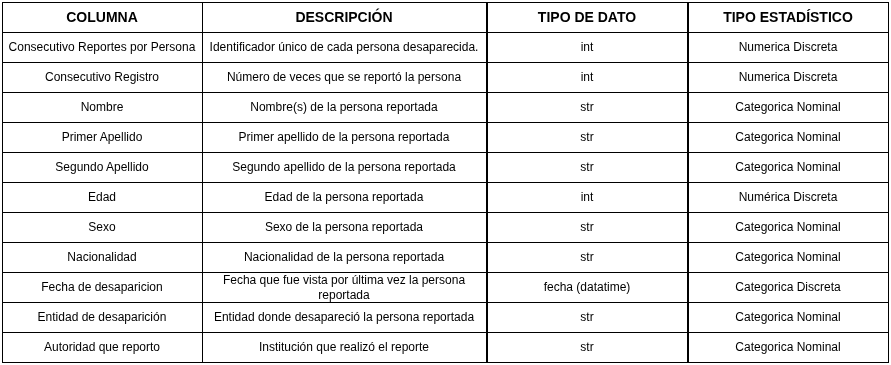
Figura 1: Tabla de columnas
Aplicación de CRISP-DM al dataset asignado
Business Understanding
Contexto / Escenario
México atraviesa una grave crisis de inseguridad con más de 110,965 casos registrados de personas desaparecidas y no localizadas, principalmente vinculadas a problemáticas estructurales como la violencia, el crimen organizado y la impunidad. Este fenómeno presenta características sistemáticas y afecta de manera diferenciada a diversos grupos de la población. El presente análisis se sitúa en un contexto social y analítico, utilizando datos abiertos sobre personas desaparecidas en México. El dataset proporciona información relevante sobre características demográficas (edad, sexo, nacionalidad), así como variables temporales y geográficas (fecha y entidad de desaparición) y las autoridades responsables del reporte. El objetivo de este análisis es identificar estadísticas, tendencias y grupos vulnerables a lo largo del tiempo.
Situación problemática
Las desapariciones ocurren frecuentemente con la intervención directa e indirecta de agentes gubernamentales. Estos actores estatales podrían corresponder a una parte de una red de macro-criminalidad en donde se promueven los fines del crimen organizado. El contexto de impunidad en México ha contribuido a la crisis de desapariciones. La falta de información sobre desapariciones es usada para justificar la falta de rendición de cuentas y justicia. Al mirar estos casos más de cerca, se demuestra que oficiales gubernamentales no investigan las desapariciones de una manera oportuna y efectiva como la ley lo requiere. Esto se puede deber a la dificultad de tal investigación o al miedo a llevarla a cabo en un contexto de crímenes violentos. De forma alternativa, la falta de búsqueda o investigación ha sido usada para encubrir el involucramiento de los mismos agentes estatales. La falta de investigación efectiva y la ausencia de justicia perpetúan el ciclo de violencia y desapariciones, dejando a las víctimas y sus familias sin respuestas ni reparación.
El objetivo de este análisis es entender cómo se comporta el fenómeno de desapariciones en México.
Necesidades de información
En consecuencia, el problema inicial se puede formular así:
¿En qué entidades del país ocurren más desapariciones?
¿Existen patrones regionales o zonas de mayor riesgo?
¿Qué grupos de edad son más vulnerables?
¿Hay diferencias por sexo o nacionalidad?
¿Qué autoridades reportan más casos?
¿Cómo han evolucionado las desapariciones a lo largo del tiempo?
Data Understanding
A partir del escenario anterior, como equipo analítico se realiza una exploración inicial del dataset, evaluando la calidad de los datos, valores faltantes e inconsistencias, formulando preguntas como las siguientes:
Sobre estructura general del dataset
¿Cuántas filas y columnas tiene el dataset?
(anteriormente vimos que tiene 116945 filas y 11 columnas)
¿Cuantas variables numéricas y categóricas hay?
(notamos 3 variables numéricas: edad, consecutivo reportes por persona, consecutivo registro; y 8 variables categóricas: nombre, apellido paterno, apellido materno, sexo, nacionalidad, fecha de desaparición, entidad de desaparición, autoridad que reporta)
¿Existen registros duplicados, datos eliminados o filas incompletas?
¿Hay inconsistencias en los nombres de entidades o instituciones?
Sobre variables de entidades de desaparición
¿Cuáles son las entidades con más desapariciones?
¿Cómo se distribuyen las desapariciones a lo largo del tiempo?
Sobre variables de las instituciones que reportan desapariciones
¿Qué autoridades reportan la mayor cantidad de desapariciones?
¿Existen instituciones con mayor registros inconsistentes o muy pocos reportes?
Sobre variables características de las personas desaparecidas
¿Qué grupos de edad son más vulnerables a las desapariciones?
¿Qué grupos de sexo y nacionalidad presentan más casos de desaparición?
Sobre la calidad de los datos
¿Qué porcentaje de datos faltantes hay en cada columna?
Data Preparation
Antes de emplear cualquier técnica de limpieza, necesitamos analizar los datos eliminados, duplicados y vacíos, para contestar las siguientes preguntas:
¿Cuál es el porcentaje de faltantes de cada columna?
Código
import numpy as npimport pandas as pddataset = pd.read_csv("RNPDNO-22-08-2023.csv", encoding="latin-1")df = pd.DataFrame(dataset)#limpiamos el dataset, convirtiendo a NaN en un csv copiafaltantes = [ "", " ", "NA", "N/A", "SE DESCONOCE", "ELIMINADO 1", "ELIMINADO 2", "ELIMINADO 3", "ELIMINADO 4", "ELIMINADO 5", "ELIMINADO 6", "ELIMINADO 7", "ELIMINADO 8", "ELIMINADO 9", "ELIMINADO 10" , "ELIMINADO 11"]df_limpio = df.replace(faltantes, np.nan)df_limpio = df_limpio.replace(r"ELIMINADO.*", np.nan, regex=True)df_limpio.to_csv("dataset_limpio.csv", index=False) # Obtenemos el porcentaje de valores faltantes por columnafaltantes_abs = df_limpio.isna().sum() #convertimos valores a T/F, y sumamos por columna para obtener el numero de faltantesporcentaje_col = (df_limpio.isna().sum() /len(df_limpio)) *100#porcentaje de faltantes por columnanum_faltantes_col = df_limpio.isna().sum() #numero de faltantes por columnaresumen = pd.DataFrame({"Número de faltantes": num_faltantes_col,"Porcentaje ": porcentaje_col.round(0).astype(int).astype(str) +" %"})print(resumen.to_string())
Número de faltantes Porcentaje
Consecutivo Reportes por Persona 5980 5 %
Consecutivo Registro 0 0 %
Nombre 37465 32 %
Primer Apellido 37487 32 %
Segundo Apellido 38908 33 %
Edad 42022 36 %
Sexo 37460 32 %
Nacionalidad 45981 39 %
Fecha de desaparición 93542 80 %
Entidad de desaparición 38261 33 %
Autoridad que reportó 38024 33 %
¿Cuál es el porcentaje de valores faltantes en general?
Código
import numpy as npimport pandas as pddataset = pd.read_csv("RNPDNO-22-08-2023.csv", encoding="latin-1")df = pd.DataFrame(dataset)#limpiamos el dataset, convirtiendo a NaN en un csv copiafaltantes = [ "", " ", "NA", "N/A", "SE DESCONOCE", "ELIMINADO 1", "ELIMINADO 2", "ELIMINADO 3", "ELIMINADO 4", "ELIMINADO 5", "ELIMINADO 6", "ELIMINADO 7", "ELIMINADO 8", "ELIMINADO 9", "ELIMINADO 10" , "ELIMINADO 11"]df_limpio = df.replace(faltantes, np.nan)df_limpio = df_limpio.replace(r"ELIMINADO.*", np.nan, regex=True)df_limpio.to_csv("dataset_limpio.csv", index=False) # Obtenemos el porcentaje total de valores faltantes en el datasettotal_celdas = df_limpio.shape[0] * df_limpio.shape[1]total_faltantes = df_limpio.isna().sum().sum() #sumamos el total de datos faltantes en todo el datasetporcentaje_total = (total_faltantes / total_celdas) *100# sacamos el porcentajeprint("")print(f"Número total de datos faltantes: {total_faltantes}")print(f"Porcentaje total de datos faltantes: {round(porcentaje_total)} %")
Número total de datos faltantes: 415130
Porcentaje total de datos faltantes: 32 %
¿Cuál es el patrón de ausencia?
Se identifican distintos patrones de ausencia en el dataset. La variable fecha de desaparición tiene el mayor porcentaje de valores faltantes (80%), lo que sugiere un patrón no aleatorio asociado a fallas en el registro. También existen casos con múltiples datos faltantes simultáneamente, especialmente en registros con varias columnas con el valor “ELIMINADO”, indicando ausencia agrupada por fila. Por otra parte variables como edad, sexo y nacionalidad muestran un porcentaje faltante entre 30% y 40% de forma más dispersa, lo que puede apuntar a problemas de captura o diferencias entre fuentes. En conjunto, los datos faltantes responden a factores estructurales y no son completamente aleatorios.
¿Cuál sería el mecanismo de ausencia más probable?
En el caso de la variable Fecha de desaparición su porcentaje de valores faltantes (80%) indica un mecanismo de tipo MAR (Missing At Random), ya que su ausencia probablemente depende de factores como la institución que reporta, la entidad o el periodo de registro.
Por otro lado, los registros que contienen valores como “ELIMINADO” evidencian un mecanismo de tipo MNAR (Missing Not At Random), dado que la ausencia de información puede deberse a procesos intencionales de anonimización o censura.
Finalmente, variables como edad, sexo y nacionalidad presentan un comportamiento consistente con un mecanismo predominantemente MAR, posiblemente asociado a inconsistencias en la captura de datos o diferencias en la calidad de las fuentes.
Nota: La identificación del mecanismo de ausencia es crucial para determinar las estrategias de limpieza y análisis, ya que cada tipo de mecanismo requiere enfoques diferentes para manejar los datos faltantes sin introducir sesgos significativos.
MCAR: faltan datos al azar
MAR: faltan datos dependiendo de otra variable
MNAR: faltan datos porque justo ese dato es problemático
¿Qué decisión se puede tomar respecto a los valores faltantes y por qué?
No podemos eliminar observaciones incompletas puesto que la mayoría el 80 % de la columna de Fecha de desaparición está incompleta, por lo que perderíamos el 80% de la información total. La imputación simple mediante media, mediana o moda no resulta adecuada para la variable Fecha de desaparición puesto que generaría falsas concentraciones de datos en determinados periodos de tiempo, distorsionando las tendencias reales y comprometiendo la validez del análisis. Por lo que se opta por mantener los valores faltantes remplazándolos como NaN para mantener la integridad de los datos disponibles y evitar sesgos a través de imputaciones incorrectas. Y eliminamos las filas que tienen valores como “ELIMINADO” en todas sus columnas, ya que estas filas no aportan información útil para el análisis y su presencia podría generar ruido o confusión en los resultados. Finalmente, el poco porcentaje de registros con fecha disponible se pueden utilizar para el análisis temporal, permitiendo estudiar tendencias y evolución en el tiempo además de el análisis demográfico, geográfico e institucional que se puede realizar con la mayoría del dataset, maximizando el aprovechamiento de la información disponible.
¿Cómo podemos encontrar registros duplicados?
Para encontrar registros duplicados primero necesitamos limpiar el dataset quitando filas que contengan todos sus datos como ELIMINADO y reemplazando los vacíos por NaN, para luego buscar filas que coincidan en las siguientes columnas: nombre, apellido paterno, apellido materno, fecha de desaparición, entidad de desaparición y autoridad que reportó. Estas columnas se consideran relevantes para identificar registros duplicados, ya que una persona puede tener múltiples reportes en diferentes instituciones o momentos, pero si coinciden en estas características clave es probable que se trate del mismo caso registrado varias veces.
Código
import pandas as pdimport numpy as np# 1. Cargamos dataset dataset = pd.read_csv("RNPDNO-22-08-2023.csv", encoding="latin-1")print("Total de registros iniciales:", len(dataset))# 2. Reemplazamos vacíos por NaNdataset = dataset.replace(r'^\s*$', np.nan, regex=True)# 3. Reemplazamos "ELIMINADO" por NaNdataset = dataset.replace(to_replace="ELIMINADO.*", value=np.nan, regex=True)# 4. Eliminamos filas donde todas las columnas relevantes son NaN (registros ELIMINADO)columnas_relevantes = ["Nombre", "Primer Apellido", "Segundo Apellido","Fecha de desaparición", "Entidad de desaparición", "Autoridad que reportó"]dataset = dataset.dropna(subset=columnas_relevantes, how="all")# Normalizamos textocols_texto = ["Sexo", "Nacionalidad", "Entidad de desaparición", "Autoridad que reportó"]for col in cols_texto: dataset[col] = dataset[col].str.upper().str.strip()# 6. cambiamos INDETERMINADO como NaNdataset["Sexo"] = dataset["Sexo"].replace("INDETERMINADO", np.nan)# 5. Convertimos la columna de consecutivo a entero nullabledataset["Consecutivo Reportes por Persona"] = dataset["Consecutivo Reportes por Persona"].astype("Int64")# 6. Buscamos si hay duplicados duplicados = dataset[dataset.duplicated( subset=["Nombre", "Primer Apellido", "Segundo Apellido","Fecha de desaparición", "Entidad de desaparición", "Autoridad que reportó" ], keep=False)]# print("Ejemplo de registros duplicados:")# print(duplicados.head(20))print("Duplicados encontrados:", len(duplicados))# 7. Eliminamos duplicadosdataset = dataset.drop_duplicates( subset=["Nombre", "Primer Apellido", "Segundo Apellido","Fecha de desaparición", "Entidad de desaparición", "Autoridad que reportó" ], keep="first")# 8. Confirmamos que ya no hay duplicadosduplicados = dataset[dataset.duplicated( subset=["Nombre", "Primer Apellido", "Segundo Apellido","Fecha de desaparición", "Entidad de desaparición", "Autoridad que reportó" ], keep=False)]print("Nuevos duplicados encontrados:", len(duplicados))# 9. Guardar dataset limpiodataset.to_csv("dataset_limpio.csv", index=False)print("Dataset guardado como dataset_limpio.csv")print("Total de registros finales:", len(dataset))
Total de registros iniciales: 116945
Duplicados encontrados: 385
Nuevos duplicados encontrados: 0
Dataset guardado como dataset_limpio.csv
Total de registros finales: 79285
¿Qué acciones se tomaron respecto a los registros duplicados y por qué?
Eliminamos únicamente los registros que coincidieran en nombre, apellido paterno, materno, fecha de desaparición, Entidad de desaparición y Autoridad que reportó puesto que el nombre y apellido no son suficiente para eliminar registros duplicados pues esa persona puede tener reportes en diferentes instituciones.
Modelling
Se proponen técnicas como clustering y análisis de series de tiempo para el análisis del fenómeno. A continuación, se muestra una implementación inicial de ambos modelos para identificar patrones en la edad y volumen de desapariciones.
1. Análisis de Series de Tiempo
Este modelo busca identificar la tendencia temporal del volumen de personas desaparecidas a lo largo de los meses.
Código
import pandas as pdimport matplotlib.pyplot as plt# Asumiendo que df_limpio es nuestro dataframe después del Data Preparation# Agrupamos por año y mes usando la fecha de desapariciónif"Fecha de desaparición"in df_limpio.columns: df_limpio["Fecha de desaparición"] = pd.to_datetime(df_limpio["Fecha de desaparición"], errors="coerce") df_ts = df_limpio.dropna(subset=["Fecha de desaparición"]).copy() serie_tiempo = df_ts.groupby(df_ts["Fecha de desaparición"].dt.to_period("M")).size().reset_index(name="Total") serie_tiempo["Fecha de desaparición"] = serie_tiempo["Fecha de desaparición"].dt.to_timestamp() plt.figure(figsize=(12, 6)) plt.plot(serie_tiempo["Fecha de desaparición"], serie_tiempo["Total"], marker='', linestyle='-', color='b') plt.title("Tendencia Histórica de Desapariciones (Agrupado por Mes)") plt.xlabel("Año y Mes") plt.ylabel("Cantidad de Desapariciones") plt.grid(True) plt.show()else:print("La columna 'Fecha de desaparición' no está disponible para analizar.") plt.figure(figsize=(5, 5)) sexo_counts.plot(kind='pie', autopct='%1.1f%%', colors=['#3266ad', '#e05c5c']) plt.title('Proporción por sexo') plt.ylabel('') plt.tight_layout() plt.show()
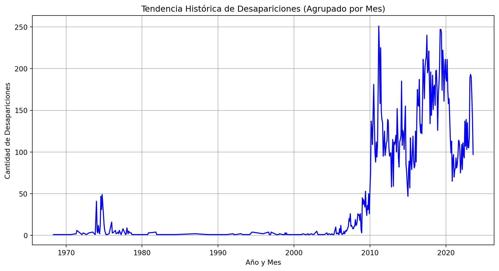
De esta grafica podemos encontrar que el porcentaje de hombres desaparecidos es mayor al de mujeres, sin embargo, el porcentaje de datos faltantes en la columna de sexo es del 30%, por lo que esta información no se puede considerar completamente confiable.
2. Clustering (K-Means)
Agruparemos las entidades federativas (estados) con base en dos características numéricas: la cantidad total de desapariciones y la edad promedio de los desaparecidos.
Código
from sklearn.cluster import KMeansfrom sklearn.preprocessing import StandardScalerimport seaborn as snsif"Entidad de desaparición"in df_limpio.columns and"Edad"in df_limpio.columns: df_limpio["Edad"] = pd.to_numeric(df_limpio["Edad"], errors="coerce") df_cluster = df_limpio.groupby("Entidad de desaparición").agg({"Edad": "mean","Consecutivo Registro": "count" }).reset_index() df_cluster.rename(columns={"Consecutivo Registro": "Total_Desapariciones"}, inplace=True) df_cluster.dropna(inplace=True) scaler = StandardScaler() X_scaled = scaler.fit_transform(df_cluster[["Edad", "Total_Desapariciones"]]) kmeans = KMeans(n_clusters=4, random_state=42) df_cluster["Cluster"] = kmeans.fit_predict(X_scaled)# Visualizar los clusters plt.figure(figsize=(10, 6)) sns.scatterplot(data=df_cluster, x="Edad", y="Total_Desapariciones", hue="Cluster", palette="viridis", s=100) plt.title("Clustering de Entidades: Volumen de Desapariciones vs Edad Promedio") plt.xlabel("Edad Promedio") plt.ylabel("Total de Desapariciones")for i, txt inenumerate(df_cluster["Entidad de desaparición"]):if df_cluster["Total_Desapariciones"][i] > df_cluster["Total_Desapariciones"].quantile(0.85): # Solo estados con alto volumen plt.annotate(txt, (df_cluster["Edad"][i], df_cluster["Total_Desapariciones"][i]), fontsize=9) plt.show()else:print("Faltan columnas numéricas requeridas para el clustering.")
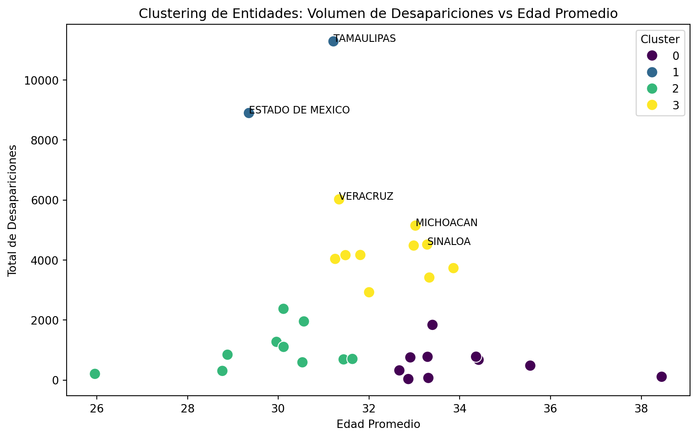
3. Clasificación con Árboles de Decisión
Este modelo ayuda a identificar reglas que separan a las personas desaparecidas según su sexo, utilizando su Edad y el Estado donde desaparecieron.
Código
from sklearn.tree import DecisionTreeClassifier, plot_treefrom sklearn.preprocessing import LabelEncoderif"Sexo"in df_limpio.columns and"Entidad de desaparición"in df_limpio.columns and"Edad"in df_limpio.columns: df_tree = df_limpio.dropna(subset=["Edad", "Sexo", "Entidad de desaparición"]).copy() df_tree = df_tree[df_tree["Sexo"].isin(["HOMBRE", "MUJER"])] le_sexo = LabelEncoder() df_tree["Sexo_encoded"] = le_sexo.fit_transform(df_tree["Sexo"]) le_entidad = LabelEncoder() df_tree["Entidad_encoded"] = le_entidad.fit_transform(df_tree["Entidad de desaparición"]) X = df_tree[["Edad", "Entidad_encoded"]] y = df_tree["Sexo_encoded"] clf = DecisionTreeClassifier(max_depth=3, random_state=42, class_weight="balanced") clf.fit(X, y) plt.figure(figsize=(16, 8)) plot_tree(clf, feature_names=["Edad", "Entidad (Codificada)"], class_names=le_sexo.classes_, filled=True, rounded=True, fontsize=10, proportion=True) # Mostrar en proporciones para mayor legibilidad plt.title("Árbol de Decisión: Reglas del perfil de Desaparición por Sexo") plt.show()else:print("Faltan columnas necesarias para ejecutar el Árbol de Decisión.")
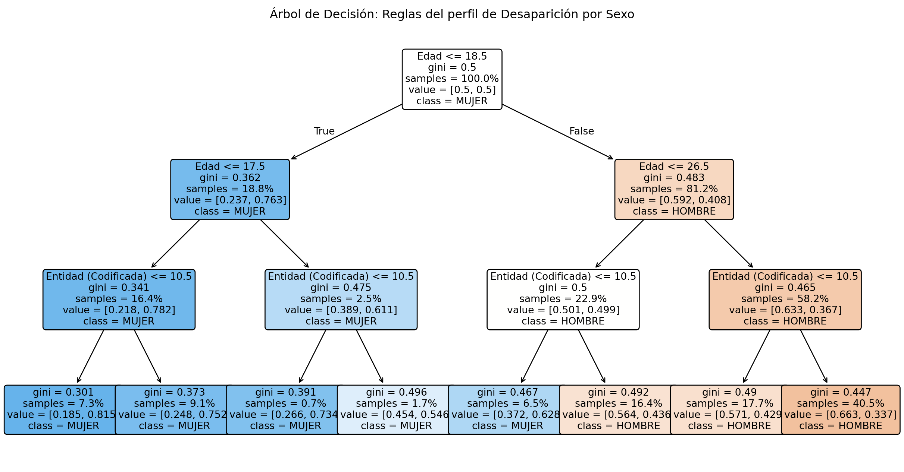
4. Predicción de Nacionalidad (Random Forest)
Este modelo evalúa la importancia de variables demográficas y geográficas para predecir si una persona reportada es de origen extranjero o mexicano, ayudando a detectar patrones de migración vulnerada.
Código
from sklearn.ensemble import RandomForestClassifierimport numpy as npif"Nacionalidad"in df_limpio.columns and"Entidad de desaparición"in df_limpio.columns: df_rf = df_limpio.dropna(subset=["Edad", "Sexo", "Entidad de desaparición", "Nacionalidad"]).copy()# Binarizamos Nacionalidad: 0 = Mexicana, 1 = Extranjera/Otra es_mexicano = df_rf["Nacionalidad"].str.contains("MEXICAN", case=False, na=False) df_rf["Es_Extranjero"] = np.where(es_mexicano, 0, 1) df_rf = df_rf[df_rf["Sexo"].isin(["HOMBRE", "MUJER"])] le_sexo = LabelEncoder() df_rf["Sexo_encoded"] = le_sexo.fit_transform(df_rf["Sexo"]) le_entidad = LabelEncoder() df_rf["Entidad_encoded"] = le_entidad.fit_transform(df_rf["Entidad de desaparición"]) X = df_rf[["Edad", "Sexo_encoded", "Entidad_encoded"]] y = df_rf["Es_Extranjero"]# Entrenamiento de Bosque Aleatorio balanceado para manejar grupos minoritarios (extranjeros) rf = RandomForestClassifier(n_estimators=50, max_depth=5, class_weight="balanced", random_state=42) rf.fit(X, y)# Obtenemos la importancia de cada variable (cuál predice mejor el origen) importances = rf.feature_importances_ features = ["Edad", "Sexo", "Entidad"] plt.figure(figsize=(8, 5)) plt.barh(features, importances, color='teal') plt.title("Importancia de Factores para Predecir Población Extranjera") plt.xlabel("Nivel de Importancia (Importancia de Gini)") plt.show()else:print("Faltan columnas necesarias para el modelo de Nacionalidad.")
Evaluation
Con base en la implementación de los modelos y el EDA previo, se establecen las siguientes conclusiones y observaciones para el cumplimiento de los Objetivos del Negocio:
Cumplimiento de las Necesidades de Información:
Los diversos modelos (Clustering, Árboles) consiguieron responder activamente “qué entidades corren mayor riesgo” y “cuáles grupos son vulnerables (edad y género)”. Las reglas visuales del árbol de decisión ayudan a los tomadores de decisiones a entender demográficamente los riesgos.
Limitaciones por la Calidad de los Datos:
Series de Tiempo y Fechas: El análisis temporal, aunque permite observar picos institucionales de reportes, se encuentra profundamente sesgado. El haber documentado un 80% de datos faltantes bajo un comportamiento MAR u ocultamiento MNAR indica que los valles en la gráfica de tiempo pueden no representar baja criminalidad, sino ineficiencia burocrática temporal o épocas de no-registro de las autoridades.
Confiabilidad Técnica y Sesgos de Clase:
Random Forest (Nacionalidad): El intento de predecir población extranjera devela un fuerte desequilibrio estructural (imbalance de clases). La evaluación de un modelo sobre estos datos no se puede confiar únicamente en su “Precisión” (Accuracy), ya que el ~98% de personas siempre serán de origen mexicano en los registros. Sin embargo, permite evaluar mediante Importancia de Variables (Feature Importances) que factores como la geografía son sumamente determinantes para extranjeros vulnerados durante flujos migratorios.
En conjunto, el modelado extrajo valor real de los datos disponibles, no obstante, las fallas institucionales en la captura de registros dictan que estas conclusiones representan únicamente los crímenes efectivamente “reconocidos” y capturados, más no el volumen real no reportado, y se deben presentar bajo este contexto ético.
Deployment
El despliegue (Deployment) de este proyecto de Minería de Datos no concluye en la implementación de un software predictivo automatizado tradicional, sino en la disponibilidad de inteligencia analítica y de datos limpios para tomadores de decisiones, investigadores y ONGs.
Las acciones de despliegue para este análisis consisten en:
Reporte Técnico y Reproducibilidad: Integración de todo el flujo de trabajo (desde la carga de datos hasta la Evaluación) en este documento dinámico (.qmd). Al compilarse, despliega un reporte HTML o PDF con código reproducible.
Suministro del Pipeline de Datos (Data Asset): Exportación y publicación del conjunto de datos ya depurado (dataset_limpio.csv), garantizando que equipos externos puedan montar sus propios algoritmos sobre una base con formatos homologados (fechas numéricas, strings estandarizados y nulos declarados bajo la metodología MAR/MNAR).
Despliegue de Reglas de Decisión (Insights): Las reglas extraídas en la fase de modelaje (el Árbol de Decisión y la segmentación de K-Means) pueden ser desplegadas como alertas paramétricas en sistemas de información del gobierno. Por ejemplo, al recibirse un nuevo reporte en la Fiscalía, el sistema puede alertar automáticamente sobre un riesgo agudo si la persona ingresada cruza los umbrales de alta vulnerabilidad detectados por nuestros modelos demográficos.
Cálculo de medidas con visualizaciones e interpretación
Se clasificaron las variables del dataset en cuantitativas y cualitativas con el fin de determinar las medidas y visualizaciones adecuadas, consultar la Figura 1.
Cualitativas
Nominales: sexo, nacionalidad, entidad, autoridad que reportó
Ordinales: no tenemos.
Cuantitativas
Discretas: consecutivo registro, edad
Continuas: no tenemos
Nota: La variable fecha de desaparición se clasifica como una variable temporal, ya que representa un punto específico en el tiempo y no una cantidad medible.
Sin embargo, esta variable puede transformarse en nuevas variables derivadas, como año y mes, las cuales permiten realizar análisis cuantitativos y categóricos. Por ejemplo, el mes puede utilizarse como variable categórica ordinal para identificar patrones estacionales en las desapariciones.
Nota: Las variables nombre, primer apellido, segundo apellido y consecutivo de reportes por persona (ID) fueron clasificadas como variables identificadoras.
Estas variables no fueron consideradas en el análisis estadístico, ya que su función es únicamente distinguir registros individuales.
Asimismo, no son susceptibles de análisis mediante medidas estadísticas ni aportan valor en la generación de visualizaciones, debido a que no permiten identificar patrones, tendencias o relaciones significativas dentro del dataset.
Medidas de localización
Para el análisis de las medidas de localización se utilizó la variable edad, calculando la media, mediana y moda. A partir del histograma, se observa que la edad con mayor frecuencia de desaparición es de 18 años (moda), lo cual sugiere una concentración preocupante en la población adolescente.
Asimismo, la mediana (29) es menor que la media (32), lo que indica que la distribución presenta un sesgo hacia la derecha. Esto implica que existen algunos casos de mayor edad que elevan el promedio.
Por otro lado, los percentiles permiten comprender mejor la distribución de la variable. Por ejemplo, el percentil 90 indica que el 90% de las personas desaparecidas tiene una edad menor o igual a 52 años. Estas medidas son útiles para identificar valores extremos y analizar la dispersión de los datos.
Código
import pandas as pdimport numpy as npimport matplotlib.pyplot as plt# Cargar dataset limpiodf = pd.read_csv('dataset_limpio.csv', encoding='latin1')df['Edad'] = pd.to_numeric(df['Edad'], errors='coerce')edad = df['Edad'].dropna().values# Medidas de localización mean = edad.mean()median = np.median(edad)# Moda aproximada: centro del bin con mayor frecuenciabins =50counts, bin_edges = np.histogram(edad, bins=bins)max_bin_idx = np.argmax(counts)mode_approx =0.5* (bin_edges[max_bin_idx] + bin_edges[max_bin_idx +1])print(f"Media = {mean:.0f} años")print(f"Mediana = {median:.0f} años")print(f"Moda (aprox) = {mode_approx:.0f} años")# Histograma con líneas de localización plt.figure()plt.hist(edad, bins=bins, alpha=0.45, edgecolor="white")plt.title("Personas desaparecidas en México: histograma de edad")plt.xlabel("Edad (años)")plt.ylabel("Frecuencia")plt.axvline(mean, color="tab:blue", linestyle="--", linewidth=2, label=f"Media = {mean:.1f}")plt.axvline(median, color="tab:orange", linestyle="-", linewidth=2, label=f"Mediana = {median:.0f}")plt.axvline(mode_approx, color="tab:red", linestyle=":", linewidth=2, label=f"Moda (aprox) = {mode_approx:.0f}")plt.legend()plt.tight_layout()plt.show()# ECDF para percentiles y colax_sorted = np.sort(edad)y = np.arange(1, x_sorted.size +1) / x_sorted.sizeplt.figure()plt.step(x_sorted, y, where="post")plt.title("Personas desaparecidas en México: ECDF de edad")plt.xlabel("Edad (años)")plt.ylabel("Proporción acumulada")plt.ylim(0, 1.01)plt.tight_layout()plt.show()# Percentilesp25, p50, p75, p90, p95 = np.quantile(edad, [0.25, 0.50, 0.75, 0.90, 0.95])print(f"P25={p25:.0f} años, P50={p50:.0f} años, P75={p75:.0f} años")print(f"P90={p90:.0f} años, P95={p95:.0f} años")
Media = 32 años
Mediana = 29 años
Moda (aprox) = 18 años
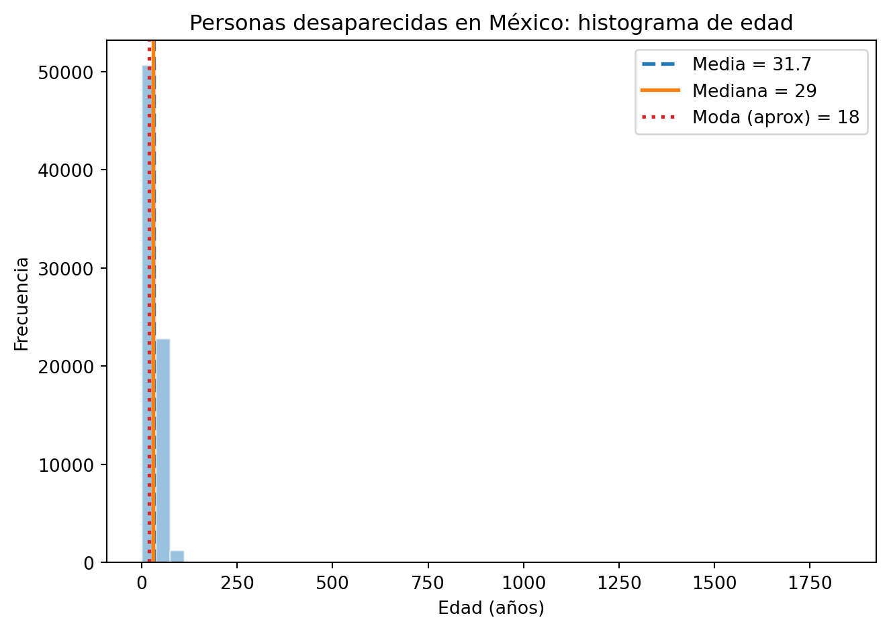
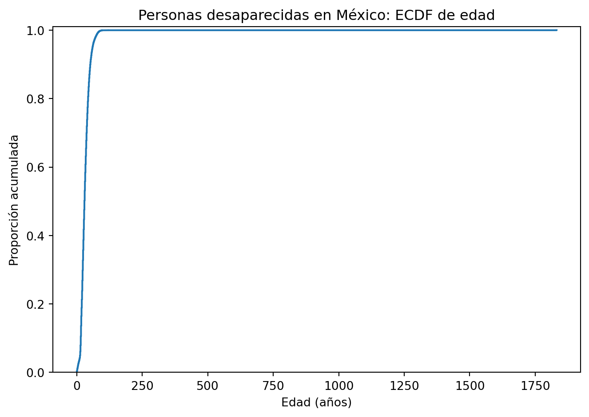
P25=21 años, P50=29 años, P75=40 años
P90=52 años, P95=60 años
En ambas gráficas se observa claramente la presencia de un sesgo. Esto se debe a valores atípicos considerablemente alejados del resto (por ejemplo 1832), lo cual puede confirmarse con el siguiente código.
Código
print(df['Edad'].max())
1832.0
Dado que no es posible tener edades tan grandes haremos otro análisis donde sólo tomaremos edades de 0 a 100, esto con el fin de tener resultados más realistas. Como vemos obtenemos nuevos valores que no son tan distintos a los primeros a excepción de la moda que cambia a 27.
Código
import pandas as pdimport numpy as npimport matplotlib.pyplot as plt# Cargar dataset limpiodf = pd.read_csv('dataset_limpio.csv', encoding='latin1')df['Edad'] = pd.to_numeric(df['Edad'], errors='coerce')edad = df['Edad'].dropna().valuesedad = edad[(edad >=0) & (edad <=100)] # Medidas de localizaciónmean = edad.mean()median = np.median(edad)# Moda aproximada: centro del bin con mayor frecuenciabins =50counts, bin_edges = np.histogram(edad, bins=bins)max_bin_idx = np.argmax(counts)mode_approx =0.5* (bin_edges[max_bin_idx] + bin_edges[max_bin_idx +1])print(f"Media = {mean:.0f} años")print(f"Mediana = {median:.0f} años")print(f"Moda (aprox) = {mode_approx:.0f} años")# Histograma con líneas de localizaciónplt.figure()plt.hist(edad, bins=bins, alpha=0.45, edgecolor="white")plt.title("Personas desaparecidas en México: histograma de edad")plt.xlabel("Edad (años)")plt.ylabel("Frecuencia")plt.axvline(mean, color="tab:blue", linestyle="--", linewidth=2, label=f"Media = {mean:.1f}")plt.axvline(median, color="tab:orange", linestyle="-", linewidth=2, label=f"Mediana = {median:.0f}")plt.axvline(mode_approx, color="tab:red", linestyle=":", linewidth=2, label=f"Moda (aprox) = {mode_approx:.0f}")plt.legend()plt.tight_layout()plt.show()# ECDF para percentiles y colax_sorted = np.sort(edad)y = np.arange(1, x_sorted.size +1) / x_sorted.sizeplt.figure()plt.step(x_sorted, y, where="post")plt.title("Personas desaparecidas en México: ECDF de edad")plt.xlabel("Edad (años)")plt.ylabel("Proporción acumulada")plt.ylim(0, 1.01)plt.tight_layout()plt.show()# Percentilesp25, p50, p75, p90, p95 = np.quantile(edad, [0.25, 0.50, 0.75, 0.90, 0.95])print(f"P25={p25:.0f} años, P50={p50:.0f} años, P75={p75:.0f} años")print(f"P90={p90:.0f} años, P95={p95:.0f} años")
Media = 32 años
Mediana = 29 años
Moda (aprox) = 27 años
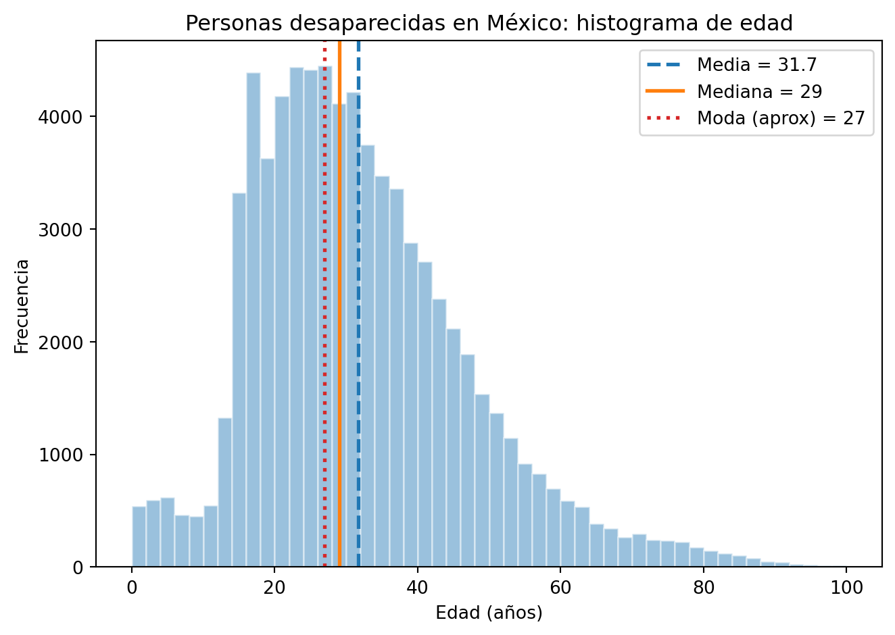
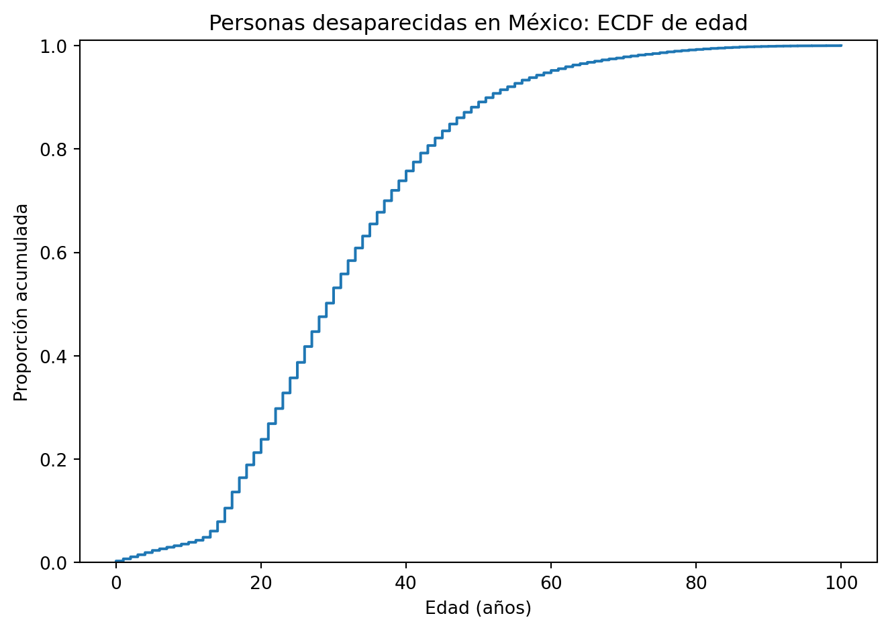
P25=21 años, P50=29 años, P75=40 años
P90=52 años, P95=60 años
Medidas de variabilidad
Varianza y desviación estándar
Para interpretar la varianza nos ayudamos de la desviación estandar, en este caso tenemos una desviación estándar de 17 años, esto significa que las edades de las personas registradas como desaparecidas se dispersan, en promedio, aproximadamente 17 años por encima o por debajo de la media. Esto implica que el rango típico de edades oscila entre los 14 años (31 − 17) y los 48 años (31 + 17), abarcando desde adolescentes hasta adultos de mediana edad como el perfil más frecuente.
Esto refleja que la desaparición de personas en México no se limita a un grupo específico, sino que afecta a individuos en distintas edades, sin embargo se puede ver una mayor concentración en edades jóvenes, lo cual vimos también con la moda, esto sugiere que la población adolescente y adulta joven enfrenta un riesgo particularmente elevado.
Código
import pandas as pdimport numpy as npimport matplotlib.pyplot as plt# Cargar CSV limpiodf = pd.read_csv('dataset_limpio.csv', encoding='latin1')df['Edad'] = pd.to_numeric(df['Edad'], errors='coerce')edad = df['Edad'].dropna()# Medidas de variabilidad varianza = edad.var(ddof=1) desv_std = edad.std(ddof=1)media = edad.mean()print(f"Varianza: {varianza:.0f} años")print(f"Desviación estándar: {desv_std:.0f} años")print(f"Media: {media:.0f} años")# Gráfica fig, ax = plt.subplots(figsize=(10, 5))ax.hist(edad, bins=range(0, 121, 5), color='#3266ad', alpha=0.75, edgecolor='white', linewidth=0.5, label='Distribución de edades')# Línea de la mediaax.axvline(media, color='#E24B4A', linewidth=2, linestyle='--', label=f'Media: {media:.1f} años')# Banda de ±1 desviación estándarax.axvspan(media - desv_std, media + desv_std, alpha=0.15, color='#EF9F27', label=f'±1 σ ({media - desv_std:.1f} – {media + desv_std:.1f} años)')ax.set_title('Varianza y desviación estándar — edad de personas desaparecidas', fontsize=13, pad=12)ax.set_xlabel('Edad (años)', fontsize=11)ax.set_ylabel('Número de personas', fontsize=11)ax.legend(fontsize=10)ax.yaxis.set_major_formatter(plt.FuncFormatter(lambda x, _: f'{int(x):,}'))plt.tight_layout()plt.savefig('variabilidad_edad.png', dpi=150, bbox_inches='tight')plt.show()
Varianza: 293 años
Desviación estándar: 17 años
Media: 32 años
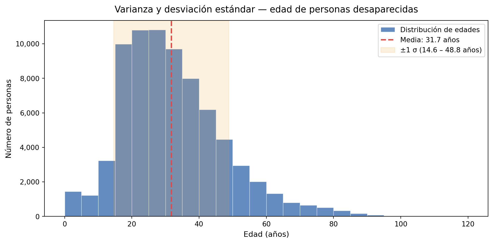
Cuartiles, Rango e IQR
Cuartiles El primer cuartil (Q1) de 21 años indica que el 25% de las personas desaparecidas tenía 21 años o menos al momento de su desaparición, lo que evidencia una concentración significativa de casos en población joven. El tercer cuartil (Q3) de 40 años señala que el 75% de los registros corresponde a personas de 40 años o menos, confirmando que la desaparición de personas en México afecta predominantemente a individuos en etapa productiva y juvenil.
Rango Intercuartílico (IQR) El IQR de 19 años representa la amplitud del 50% central de los datos, es decir, la mitad de las personas desaparecidas tenía entre 21 y 40 años,mostrando que la mayor concentración de edades se encuentra dentro de ese intervalo.
Rango y valores atípicos Los límites calculados a partir del IQR establecen que valores fuera del rango de −7.50 a 68.50 años se consideran atípicos estadísticamente. Dado que una edad negativa no tiene interpretación posible, el límite inferior efectivo es 0 años. Esto significa que cualquier persona registrada con más de 68 años representa un caso atípico dentro del dataset, esto puede implicar que dichos casos sean errores o que se trate de desapariciones menos frecuentes en grupos de edad avanzada.
Q1: 21 años
Q3: 40 años
IQR: 19 años
Límite inferior: -8 años
Límite superior: 68 años
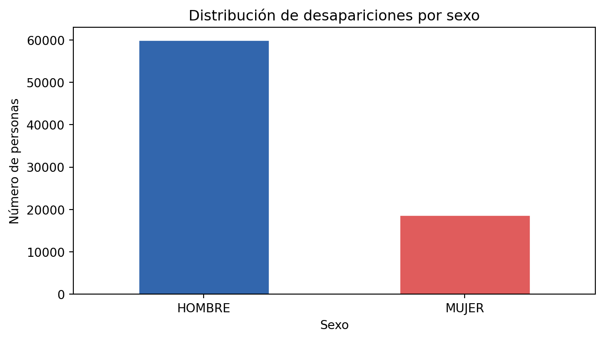
Dado que no es posible tener edades tan grandes haremos otro análisis donde sólo tomaremos edades de 0 a 100, esto con el fin de tener una mejor visualización de los resultados.
Q1: 21.00 años
Q3: 40.00 años
IQR: 19.00 años
Límite inferior: -7.50 años
Límite superior: 68.50 años
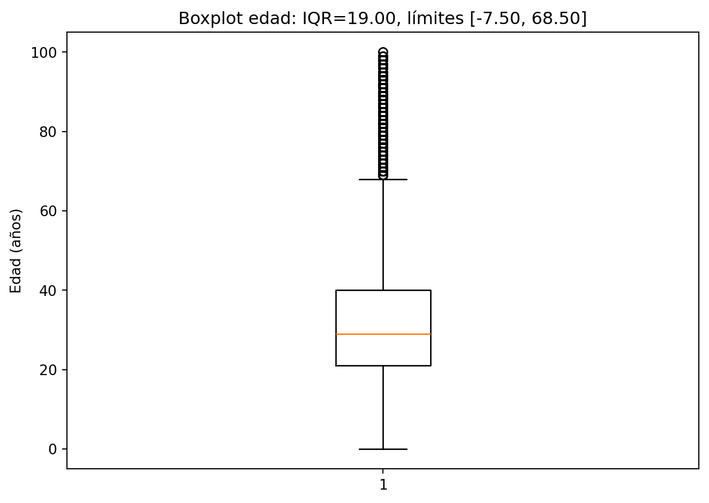
Coeficiente de variación (CV)
Para esta parte vamos a comparar la edad entre hombres y mujeres desaparecidos:
Hombres Los hombres desaparecidos presentan una media de 33.7 años con una desviación estándar de 17.4 años, resultando en un coeficiente de variación de 0.52 (52%). Esto indica que la dispersión de edades es considerable respecto a la media, reflejando que las desapariciones masculinas abarcan un amplio espectro de edades.
Mujeres Las mujeres desaparecidas presentan una media de 25.5 años con una desviación estándar de 14.7 años, resultando en un coeficiente de variación de 0.57 (57%). Aunque la desviación estándar es menor que la de los hombres, el CV es ligeramente superior, lo que indica que en proporción a su media, las edades de las mujeres desaparecidas son relativamente más dispersas.
Ambos grupos presentan coeficientes de variación superiores al 50%, lo que confirma una dispersión alta en ambos casos. Sin embargo, el resultado más relevante es la diferencia en las medias: las mujeres desaparecidas son en promedio 8 años más jóvenes que los hombres (25.6 vs 33.7 años). Esto sugiere que las mujeres enfrentan un riesgo de desaparición concentrado en edades más tempranas.
Código
import pandas as pdimport numpy as npimport matplotlib.pyplot as plt# Cargar CSV limpiodf = pd.read_csv('dataset_limpio.csv', encoding='latin1')df['Edad'] = pd.to_numeric(df['Edad'], errors='coerce')# Separar por sexohombres = df[df['Sexo'] =='HOMBRE']['Edad'].dropna()mujeres = df[df['Sexo'] =='MUJER']['Edad'].dropna()# Coeficiente de variación cv_h = hombres.std(ddof=1) / hombres.mean()cv_m = mujeres.std(ddof=1) / mujeres.mean()print(f"Hombres: media={hombres.mean():.1f}, s={hombres.std(ddof=1):.1f}, CV={cv_h:.2f}")print(f"Mujeres: media={mujeres.mean():.1f}, s={mujeres.std(ddof=1):.1f}, CV={cv_m:.2f}")# Gráficaplt.figure(figsize=(10, 5))plt.hist(hombres, bins=range(0, 121, 5), alpha=0.6, color='#3266ad', label=f"Hombres: media={hombres.mean():.1f}, s={hombres.std(ddof=1):.1f}, CV={cv_h:.2f}")plt.hist(mujeres, bins=range(0, 121, 5), alpha=0.6, color='#E24B4A', label=f"Mujeres: media={mujeres.mean():.1f}, s={mujeres.std(ddof=1):.1f}, CV={cv_m:.2f}")plt.title("Coeficiente de variación — edad de personas desaparecidas por sexo")plt.xlabel("Edad (años)")plt.ylabel("Frecuencia")plt.legend()plt.tight_layout()plt.savefig('coeficiente_variacion.png', dpi=150, bbox_inches='tight')plt.show()
Para el cálculo de las medidas de heterogeneidad (Shannon y Gini) se utilizaron variables cualitativas como sexo, nacionalidad, entidad y autoridad que reportó, ya que estas permiten analizar la distribución de los casos entre distintas categorías.
En las gráficas, el eje vertical (eje y) representa proporciones en lugar de cantidades absolutas, lo que facilita una comparación más justa entre las variables.
Sexo: Con una entropía de Shannon de 0.54 y un índice de Gini de 0.36, el sexo es la variable menos heterogénea del análisis. Las proporciones revelan que aproximadamente el 75% de los registros corresponde a hombres, el 23% a mujeres y apenas el 0.8% a indeterminado (se descartó del dataset). Esto significa que si se tomara un registro al azar del dataset, existiría una alta probabilidad de que corresponda a un hombre, lo que refleja una distribución muy poco diversa y concentrada en una sola categoría.
Nacionalidad: A pesar de contar con 58 nacionalidades distintas, la nacionalidad presenta la entropía más baja de todas las variables (0.50) y un Gini de apenas 0.23. Esto indica que el reparto entre categorías es extremadamente desigual: la proporción correspondiente a personas de nacionalidad mexicana domina el total de registros, mientras que las demás nacionalidades tienen una representación marginal.
Entidad: Con una entropía de 2.98 y un Gini de 0.93, la distribución por entidad es considerablemente más diversa. Las 33 entidades del país participan en el reparto de casos, aunque no de forma equitativa, con entidades como Tamaulipas y Estado de México concentrando las proporciones más altas. El Gini cercano a 1 indica que los casos se distribuyen ampliamente entre las categorías, sin que ninguna entidad domine completamente el total, lo que confirma que la desaparición de personas es un fenómeno presente en todo el territorio nacional.
Autoridad: La autoridad que reportó es la variable más heterogénea del análisis, con la entropía más alta (3.37) y un Gini de 0.95 entre 72 categorías distintas. Esto significa que los reportes provienen de una gran variedad de instituciones y que el reparto entre ellas es relativamente amplio. .
Código
import pandas as pdimport numpy as npimport matplotlib.pyplot as pltimport matplotlib# Cargar CSV limpiodf = pd.read_csv('dataset_limpio.csv', encoding='latin1')# Renombrar las columnas para evitar errores con los acentosdf.columns = ['Consecutivo Reportes por Persona','Consecutivo Registro','Nombre','Primer Apellido','Segundo Apellido','Edad','Sexo','Nacionalidad','Fecha de desaparicion','Entidad de desaparicion','Autoridad que reporto']matplotlib.rcParams['axes.unicode_minus'] =False# Limpiar caracteres especiales en las columnas de textofor col in ['Sexo', 'Entidad de desaparicion', 'Nacionalidad', 'Autoridad que reporto']: df[col] = df[col].str.encode('ascii', errors='ignore').str.decode('ascii')# Filtrar valores ELIMINADO en todas las variables cualitativasfor col in ['Sexo', 'Entidad de desaparicion', 'Nacionalidad', 'Autoridad que reporto']: df[col] = df[col].where(~df[col].str.startswith('ELIMINADO 3', na=False))# Funcionesdef entropy(p): p = np.asarray(p, dtype=float) p = p[p >0]return-np.sum(p * np.log(p))def gini_impurity(p): p = np.asarray(p, dtype=float)return1.0- np.sum(p**2)def get_props(series): counts = series.value_counts(dropna=True)return counts / counts.sum()# Calcular proporciones para las variables cualitativasvariables = {'Sexo': get_props(df['Sexo']),'Entidad': get_props(df['Entidad de desaparicion']),'Nacionalidad': get_props(df['Nacionalidad']),'Autoridad': get_props(df['Autoridad que reporto']),}# Resultados print(f"{'Variable':<15}{'Shannon':>10}{'Gini':>10}{'Categorías':>12}")print("-"*50)for nombre, props in variables.items(): h = entropy(props.values) g = gini_impurity(props.values) k =len(props)print(f"{nombre:<15}{h:>10.4f}{g:>10.4f}{k:>12}")# Gráfica de barrasfig, axes = plt.subplots(2, 2, figsize=(12, 8))axes = axes.flatten()colores = ['green', 'cyan', 'yellow', 'purple']for ax, (nombre, props), color inzip(axes, variables.items(), colores):# Solo vamos a mostrar los 10 primeros para tener una mejor visualización de la grafica top = props.head(10) ax.bar(range(len(top)), top.values, color=color, alpha=0.75, edgecolor='white') ax.set_title(f'{nombre} | H={entropy(props.values):.3f} G={gini_impurity(props.values):.3f}', fontsize=11) ax.set_xticks(range(len(top))) ax.set_xticklabels(top.index, rotation=35, ha='right', fontsize=8) ax.set_ylabel('Proporción', fontsize=9) ax.set_ylim(0, 1.0)plt.suptitle('Heterogeneidad por variable — personas desaparecidas en México', fontsize=13, y=1.01)plt.tight_layout()plt.savefig('heterogeneidad_barras.png', dpi=150)plt.show()# Gráfica de dispersión Shannon vs Gini Hs = [entropy(p.values) for p in variables.values()]Gs = [gini_impurity(p.values) for p in variables.values()]plt.figure(figsize=(7, 5))plt.scatter(Hs, Gs, color='orange', s=80, zorder=3)for nombre, h, g inzip(variables.keys(), Hs, Gs): plt.text(h, g, f' {nombre}', va='center', fontsize=10)plt.title('Heterogeneidad: Entropía de Shannon vs Gini', fontsize=13, pad=12)plt.xlabel('Entropía H(p)', fontsize=11)plt.ylabel('Índice de Gini G(p)', fontsize=11)plt.grid(alpha=0.3)plt.tight_layout()plt.savefig('heterogeneidad_shannon_gini.png', dpi=150)plt.show()
HHI, Curva de Lorenz y coeficiente de Gini (desigualdad)
Para este análisis, es importante recordar que el índice Herfindahl–Hirschman Index (HHI) mide el nivel de concentración, es decir, permite identificar si una o pocas categorías concentran la mayoría de los casos. Por su parte, la curva de Lorenz muestra de forma visual si los datos se distribuyen de manera homogénea o si están concentrados en un número reducido de categorías. Finalmente, el coeficiente de Gini cuantifica el grado de desigualdad en dicha distribución.
Sexo: El HHI de 0.63 indica una concentración alta considerando que solo existen 2 categorías. El índice de Gini de desigualdad de 0.26 confirma que la distribución de casos entre sexos está lejos de ser equitativa. Esto se explica por el predominio de los hombres en los registros, quienes concentran aproximadamente el 75% de los casos, mientras que la categoría de mujeres acumula una proporción considerablemente menor.
Nacionalidad: La nacionalidad presenta los valores más altos de concentración en todo el análisis. Un HHI de 0.768 y un Gini de desigualdad de 0.974 sobre 58 categorías revelan una concentración extrema, es decir, casi la totalidad de los registros corresponde a personas de nacionalidad mexicana, mientras que las otras 57 nacionalidades tienen una presencia marginal. La Curva de Lorenz de esta variable es la que más se aleja de la igualdad de igualdad perfecta.
Entidad: El HHI de 0.065 es bajo, lo que indica que ninguna entidad domina de manera absoluta el total de casos. Sin embargo, el Gini de desigualdad de 0.543 señala que sí existe una concentración moderada, aunque los casos se distribuyen entre las 33 entidades, estados como Tamaulipas y Estado de México acumulan proporcionalmente más registros que el resto.
Autoridad: La autoridad presenta el HHI más bajo (0.048), lo que indica que al haber 72 autoridades distintas, ninguna concentra individualmente una proporción dominante del total.
Los resultados muestran dos patrones claros. Por un lado, Sexo y Nacionalidad presentan alta concentración tanto en HHI como en Gini, lo que refleja que estas variables están dominadas por una sola categoría. Por otro lado, Entidad y Autoridad tienen HHI bajos pero Gini moderados-altos, lo que indica que aunque el fenómeno involucra a muchas entidades y autoridades, la distribución entre ellas no es equitativa. En conjunto, estos resultados confirman que la desaparición de personas en México es un fenómeno nacionalmente extendido pero con desigualdades territoriales e institucionales marcadas.
Código
import pandas as pdimport numpy as npimport matplotlib.pyplot as plt# Cargar CSV limpiodf = pd.read_csv('dataset_limpio.csv', encoding='latin1')# Renombrar las columnas para evitar errores con los acentosdf.columns = ['Consecutivo Reportes por Persona','Consecutivo Registro','Nombre','Primer Apellido','Segundo Apellido','Edad','Sexo','Nacionalidad','Fecha de desaparicion','Entidad de desaparicion','Autoridad que reporto']# Filtrar ELIMINADOfor col in ['Sexo', 'Entidad de desaparicion', 'Nacionalidad', 'Autoridad que reporto']: df[col] = df[col].where(~df[col].str.startswith('ELIMINADO 3', na=False))# Funciones def hhi(counts): props = counts / counts.sum()return np.sum(props **2)def gini_desigualdad(counts): counts = np.sort(counts) n =len(counts) idx = np.arange(1, n +1)return (2* np.sum(idx * counts)) / (n * counts.sum()) - (n +1) / ndef lorenz_points(counts): counts = np.sort(counts) cum = np.cumsum(counts) cum = np.insert(cum, 0, 0)return cum / cum[-1]# Variables cualitativas variables = {'Sexo': df['Sexo'].value_counts(dropna=True),'Nacionalidad': df['Nacionalidad'].value_counts(dropna=True),'Entidad': df['Entidad de desaparicion'].value_counts(dropna=True),'Autoridad': df['Autoridad que reporto'].value_counts(dropna=True),}# Resultados print(f"{'Variable':<15}{'HHI':>10}{'Gini':>10}{'Categorías':>12}")print("-"*50)for nombre, counts in variables.items(): h = hhi(counts.values) g = gini_desigualdad(counts.values)print(f"{nombre:<15}{h:>10.4f}{g:>10.4f}{len(counts):>12}")# Gráfica Curvas de Lorenz fig, axes = plt.subplots(2, 2, figsize=(11, 9))axes = axes.flatten()colores = ['#3266ad', '#1D9E75', '#EF9F27', '#E24B4A']for ax, (nombre, counts), color inzip(axes, variables.items(), colores): n =len(counts) lorenz = lorenz_points(counts.values) x = np.linspace(0, 1, len(lorenz))# Línea de igualdad perfecta ax.plot([0, 1], [0, 1], color='gray', linestyle='--', linewidth=1, label='Igualdad perfecta')# Curva de Lorenz ax.plot(x, lorenz, color=color, linewidth=2, label=f'Lorenz Gini={gini_desigualdad(counts.values):.3f}')# Área entre curvas ax.fill_between(x, lorenz, x, alpha=0.15, color=color) ax.set_title(f'{nombre} | HHI={hhi(counts.values):.4f}', fontsize=11) ax.set_xlabel('Proporción acumulada de categorías', fontsize=9) ax.set_ylabel('Proporción acumulada de casos', fontsize=9) ax.legend(fontsize=9) ax.set_xlim(0, 1) ax.set_ylim(0, 1)plt.suptitle('Curvas de Lorenz — concentración de casos por variable', fontsize=13, y=1.01)plt.tight_layout()plt.savefig('concentracion_lorenz.png', dpi=150)plt.show()
Para esto vamos a usar las variables cuantitativas, en este caso igual tomaremos la fecha, pero únicamente el mes y año.
Correlación más fuerte (Edad y Año (-0.053)): La correlación más alta del análisis es de -0.053 entre la edad y el año de desaparición, lo que indica una relación negativa muy débil, conforme avanzan los años, la edad promedio de las personas desaparecidas tiende a disminuir ligeramente. Sin embargo, al ser un valor tan cercano a cero, esta relación no es estadísticamente significativa.
Correlación más débil (Consecutivo Registro y Mes (0.002)): La correlación más débil es de 0.002 entre el número de veces que una persona fue reportada y el mes de desaparición, un valor prácticamente nulo que indica una ausencia total de relación lineal entre ambas variables. El mes en que ocurrió la desaparición no tiene ninguna influencia sobre cuántas veces fue reportada la persona.
El resultado más relevante de esta matriz es que ninguna de las correlaciones supera el umbral de 0.1 en valor absoluto, lo que indica que no existe ninguna relación lineal significativa entre las variables numéricas del dataset. Esto significa que la edad, el número de reportes, el año y el mes de desaparición son variables prácticamente independientes entre sí.
Este resultado es esperable en un dataset de registros administrativos, en este caso de personas desaparecidas, donde las variables capturan dimensiones distintas del fenómeno y no necesariamente guardan una relación lineal directa.
Código
import pandas as pdimport numpy as npimport matplotlib.pyplot as plt# Cargar CSV limpiodf = pd.read_csv('dataset_limpio.csv', encoding='latin1')# Renombrar las columnas para evitar errores con los acentosdf.columns = ['Consecutivo Reportes por Persona','Consecutivo Registro','Nombre','Primer Apellido','Segundo Apellido','Edad','Sexo','Nacionalidad','Fecha de desaparicion','Entidad de desaparicion','Autoridad que reporto']# ── Preparar variables numéricas ─────────────────────────df['Edad'] = pd.to_numeric(df['Edad'], errors='coerce')df['Fecha'] = pd.to_datetime(df['Fecha de desaparicion'], format='%d/%m/%Y', errors='coerce')df['Anio'] = df['Fecha'].dt.yeardf['Mes'] = df['Fecha'].dt.month# Seleccionar solo las 4 variables cuantitativasnumericas = df[['Edad', 'Consecutivo Registro', 'Anio', 'Mes']].dropna()# Matriz de correlación corr = numericas.corr()print("Matriz de correlación:")print(corr.round(4))# Correlaciones más fuertes y más débiles (sin diagonal)corr_pairs = (corr .where(np.triu(np.ones(corr.shape), k=1).astype(bool)) .stack() .reset_index())corr_pairs.columns = ['Variable 1', 'Variable 2', 'Correlación']corr_pairs['Abs'] = corr_pairs['Correlación'].abs()corr_pairs = corr_pairs.sort_values('Abs', ascending=False)print("\nCorrelaciones de mayor a menor (valor absoluto):")print(corr_pairs[['Variable 1', 'Variable 2', 'Correlación']].to_string(index=False))# Heatmap fig, ax = plt.subplots(figsize=(7, 6))im = ax.imshow(corr, cmap='coolwarm', vmin=-1, vmax=1)plt.colorbar(im, ax=ax, fraction=0.046, pad=0.04)# Etiquetaslabels = ['Edad', 'Consec. Registro', 'Año', 'Mes']ax.set_xticks(range(len(labels)))ax.set_yticks(range(len(labels)))ax.set_xticklabels(labels, rotation=30, ha='right', fontsize=10)ax.set_yticklabels(labels, fontsize=10)# Valores dentro de cada celdafor i inrange(len(corr)):for j inrange(len(corr)): ax.text(j, i, f'{corr.iloc[i, j]:.3f}', ha='center', va='center', fontsize=11, color='white'ifabs(corr.iloc[i, j]) >0.5else'black')ax.set_title('Matriz de correlación — personas desaparecidas en México', fontsize=12, pad=12)plt.tight_layout()plt.savefig('correlacion_heatmap.png', dpi=150)plt.show()
Matriz de correlación:
Edad Consecutivo Registro Anio Mes
Edad 1.0000 0.0244 -0.0525 -0.0028
Consecutivo Registro 0.0244 1.0000 -0.0097 0.0019
Anio -0.0525 -0.0097 1.0000 -0.0283
Mes -0.0028 0.0019 -0.0283 1.0000
Correlaciones de mayor a menor (valor absoluto):
Variable 1 Variable 2 Correlación
Edad Anio -0.052548
Anio Mes -0.028263
Edad Consecutivo Registro 0.024374
Consecutivo Registro Anio -0.009746
Edad Mes -0.002828
Consecutivo Registro Mes 0.001922
Edad Edad NaN
Consecutivo Registro Edad NaN
Consecutivo Registro Consecutivo Registro NaN
Anio Edad NaN
Anio Consecutivo Registro NaN
Anio Anio NaN
Mes Edad NaN
Mes Consecutivo Registro NaN
Mes Anio NaN
Mes Mes NaN
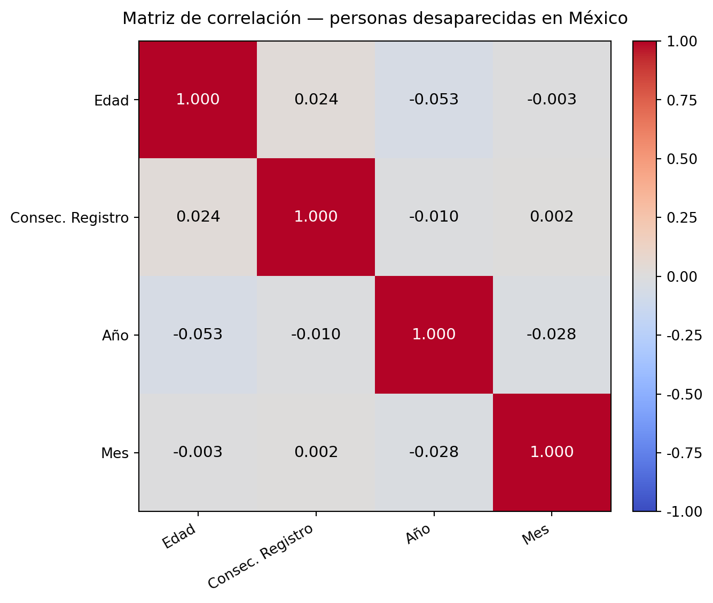
Hallazgos importantes
Alto porcentaje de datos faltantes en la columna Fecha de desaparición
El 80 % de los registros carece de fecha de desaparición, lo que limita significativamente el análisis temporal y la identificación de tendencias a lo largo del tiempo.
Concentración de desapariciones en población joven (moda: 18 años)
La distribución de edades muestra que la moda es de 18 años, lo que indica una concentración preocupante en población adolescente.
Rango típico de riesgo: entre 14 y 48 años
Encontramos una desviación estándar de 17 años sobre la media de 31 años, el perfil típico de persona desaparecida oscila entre los 14 y 48 años. Los cuartiles confirman que el 50 % central de los casos tiene entre 21 años (Q1) y 40 años (Q3), afectando principalmente a población en etapa productiva y juvenil.
Estados que concentran la mayoría de las desapariciones registradas
El análisis de clustering K-Means (k=4) sobre el total de desapariciones por entidad revela una concentración geográfica marcada. Los 5 estados con mayor volumen son: Tamaulipas, Estado de México, Veracruz, Michoacán y Sinaloa. Estos estados forman un cluster propio (Cluster 0) muy separado del resto del país, y coinciden con zonas de alta actividad del crimen organizado, corredores de tránsito y fronteras de alto riesgo.
Registros duplicados identificados por combinación de variables clave
Se detectaron registros duplicados comparando Nombre, Primer Apellido, Segundo Apellido, Fecha de desaparición Entidad y Autoridad que reportó. Se optó por este subconjunto de variables porque el mismo nombre puede corresponder a reportes legítimos en distintas instituciones o entidades. Se conservó el primer registro de cada grupo duplicado con keep=‘first’.
Existencia de registros ELIMINADO: anonimización sistemática de datos
El dataset contiene filas donde todas las columnas presentan valores como ‘ELIMINADO 1’, ‘ELIMINADO 2’, etc., indicando un mecanismo MNAR (Missing Not At Random). Estas filas fueron eliminadas durante la limpieza al no aportar información analítica. Su existencia sugiere procesos intencionales de anonimización o censura de datos.
Las desapariciones afectan predominantemente a hombres (76.2 %)
Del total de registros con sexo registrado, el 76.2 % corresponde a hombres y el 23.8 % a mujeres. No obstante, dado que 38,076 registros (33 % del total) carecen de dato de sexo, la proporción real podría diferir de estos valores.
Inexistencia de relación entre variables
A partir de la matriz de correlación se determinó que no existe una relación entre variables numéricas. Esto sugiere que la desaparición de personas en México no sigue un patrón, por lo que puede afectar a cualquier persona, en cualquier momento del año, independientemente de su edad.
Limitaciones del análisis
Calidad de los datos:
El dataset presenta problemas estructurales de calidad que limitan la profundidad del análisis. - El 80 % de la columna Fecha de desaparición es nulo. - Variables como Edad, Sexo y Nacionalidad presentan entre 30 % y 40 % de valores faltantes. - Se identificó al menos un valor atípico extremo en Edad (1,832 años), producto de error de captura. - Los valores ‘ELIMINADO’ en múltiples columnas apuntan a registros intencionalmente anonimizados.
Sesgos de captura y registro:
Los datos reflejan únicamente los casos efectivamente registrados y reportados, no el total real de desapariciones en México. Esto introduce los siguientes sesgos: - Sesgo temporal: los picos en la serie de tiempo pueden reflejar épocas de mayor registro burocrático, no necesariamente mayor incidencia real. - Las autoridades con mayor capacidad administrativa generan más registros, por lo que estados con instituciones más robustas pueden aparecer con más casos no porque tengan más desapariciones, sino porque reportan mejor.
Variables faltantes estructurales
El dataset carece de variables que serían de alto valor analítico: - Condición de localización posterior (si fue encontrada la persona y en qué estado). - Condición socioeconómica o nivel educativo. - Variables de seguimiento institucional (si se inició investigación, resultado)
Decisiones de limpieza
Se eliminaron filas que tenían todos sus valores eliminados pues no aportaban información útil para el análisis, de igual forma de cambió el valor de “ELIMINADO” y datos vacíospor NaN para mantener la integridad de los datos disponibles y evitar sesgos a través de imputaciones, es decir que no se eliminaron filas con datos faltantes ya que podían aportar información para algún análisis específico y eliminar estas filas implicaría perder una gran cantidad de información valiosa para el análisis demográfico, geográfico e institucional.
Conclusión
El análisis del RNPDNO-22-08-2023 revela que México enfrenta una crisis documentada de más de 116,000 registros de personas desaparecidas, pero con severas limitaciones de calidad en los datos. El 80 % de ausencia en Fecha de desaparición, junto con los registros intencionalmente anonimizados (ELIMINADO), indican que las cifras oficiales representan únicamente una fracción del fenómeno real. Los hallazgos estadísticos muestran de manera consistente que los grupos más afectados son jóvenes de entre 18 y 40 años. La moda de 18 años es especialmente alarmante, señalando a la población adolescente como la más expuesta. Las diferencias geográficas identificadas por el clustering y el modelo de Random Forest confirman que ciertos estados concentran una desproporcionada cantidad de casos, coincidiendo con zonas de influencia del crimen organizado y corredores migratorios.